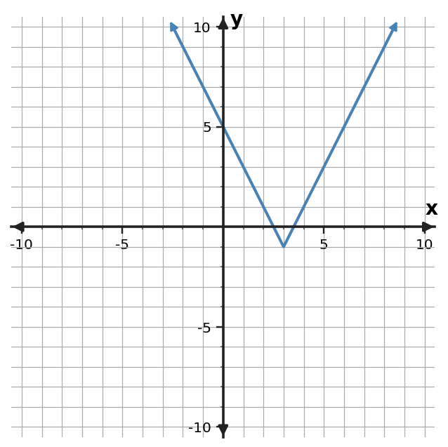

Choose an efficient method and solve $(x-6)(x+3)=0$.
Choose an efficient method and solve $(x-7)(x+4)=0$.
Choose an efficient method and solve $(x-8)(x+5)=0$.
Choose an efficient method and solve $(x-9)(x+6)=0$.
Choose an efficient method and solve $x^2-12x=28$.
Choose an efficient method and solve $x^2-16x=36$.
Choose an efficient method and solve $x^2-20x=44$.
Choose an efficient method and solve $x^2+14x=32$.
Choose a dependable method and solve $3x^2+0x-12=0$ exactly.
Choose a dependable method and solve $2x^2+x-13=0$ exactly.
Choose a dependable method and solve $3x^2+2x-14=0$ exactly.
Choose a dependable method and solve $2x^2+3x-15=0$ exactly.
Choose the most efficient first method for each equation and give a one-phrase reason.
| Equation | First method |
|---|---|
| $(x-4)(x+7)=0$ | ? |
| $x^2+12x=13$ | ? |
| $2x^2+3x-7=0$ | ? |
Compare solving $x^2-49=0$ by factoring and by the quadratic formula. Which is more efficient and why?
A model produces an irrational exact solution, but the context asks for a decimal. Explain why you should delay rounding until the final reported value.
A student says, “I always use the quadratic formula because it always works.” Critique this strategy for $(x-8)(x+3)=0$.
Factor $x^2-64$.
Factor $x^2+14x+49$.
Before factoring $16x^2-36$, identify the special pattern.
Explain why $x^2+14x+49$ fits a perfect-square-trinomial pattern.
A table changes by $-3$ in $y$ every time $x$ increases by $1$. Which familiar family is supported most strongly?
A table has a constant output ratio of $\qquad frac12$ and nonconstant first differences. Which familiar family is supported?
Use the graph shown. Which familiar function family is the best match? Justify with one graph feature.

A table with equal input steps has constant second differences of $6$. Which family is supported? Explain why curvature alone would be less convincing.
Choose an efficient method and solve $(x-6)(x+3)=0$.
Factoring/zero product: $x=6,-3$.
Choose an efficient method and solve $(x-7)(x+4)=0$.
Factoring/zero product: $x=7,-4$.
Choose an efficient method and solve $(x-8)(x+5)=0$.
Factoring/zero product: $x=8,-5$.
Choose an efficient method and solve $(x-9)(x+6)=0$.
Factoring/zero product: $x=9,-6$.
Choose an efficient method and solve $x^2-12x=28$.
Completing the square: $(x-6)^2=64$, so $x=14,-2$.
Choose an efficient method and solve $x^2-16x=36$.
Completing the square: $(x-8)^2=100$, so $x=18,-2$.
Choose an efficient method and solve $x^2-20x=44$.
Completing the square: $(x-10)^2=144$, so $x=22,-2$.
Choose an efficient method and solve $x^2+14x=32$.
Completing the square: $(x+7)^2=81$, so $x=2,-16$.
Choose a dependable method and solve $3x^2+0x-12=0$ exactly.
Quadratic formula: $x=\frac{0\pm\sqrt{144}}{6}$.
Choose a dependable method and solve $2x^2+x-13=0$ exactly.
Quadratic formula: $x=\frac{-1\pm\sqrt{105}}{4}$.
Choose a dependable method and solve $3x^2+2x-14=0$ exactly.
Quadratic formula: $x=\frac{-2\pm\sqrt{172}}{6}$.
Choose a dependable method and solve $2x^2+3x-15=0$ exactly.
Quadratic formula: $x=\frac{-3\pm\sqrt{129}}{4}$.
Choose the most efficient first method for each equation and give a one-phrase reason.
| Equation | First method |
|---|---|
| $(x-4)(x+7)=0$ | ? |
| $x^2+12x=13$ | ? |
| $2x^2+3x-7=0$ | ? |
Factoring (already factored); completing the square (leading coefficient 1 and even linear term); quadratic formula (dependable when no simple factorization is apparent).
Compare solving $x^2-49=0$ by factoring and by the quadratic formula. Which is more efficient and why?
Factoring is more efficient because $x^2-49=(x-7)(x+7)$ immediately gives $x=\pm7$ without formula substitution.
A model produces an irrational exact solution, but the context asks for a decimal. Explain why you should delay rounding until the final reported value.
Keeping the exact value through the algebra preserves precision and prevents compounding rounding error.
A student says, “I always use the quadratic formula because it always works.” Critique this strategy for $(x-8)(x+3)=0$.
The formula could work after expanding, but the zero product property solves the already-factored equation directly and with less work. Reliability alone does not make a method efficient.
Factor $x^2-64$.
$(x-8)(x+8)$.
Factor $x^2+14x+49$.
$(x+7)^2$.
Before factoring $16x^2-36$, identify the special pattern.
Difference of squares: $(4x)^2-6^2$.
Explain why $x^2+14x+49$ fits a perfect-square-trinomial pattern.
The first and last terms are squares and the middle term is $2(x)(7)=14x$, so it is $(x+7)^2$.
A table changes by $-3$ in $y$ every time $x$ increases by $1$. Which familiar family is supported most strongly?
Linear.
A table has a constant output ratio of $\qquad frac12$ and nonconstant first differences. Which familiar family is supported?
Exponential.
Use the graph shown. Which familiar function family is the best match? Justify with one graph feature.
Absolute value; the graph is V-shaped with a sharp vertex.
A table with equal input steps has constant second differences of $6$. Which family is supported? Explain why curvature alone would be less convincing.
Quadratic. Constant second differences are a specific numeric pattern; many other function families can also have curved graphs.